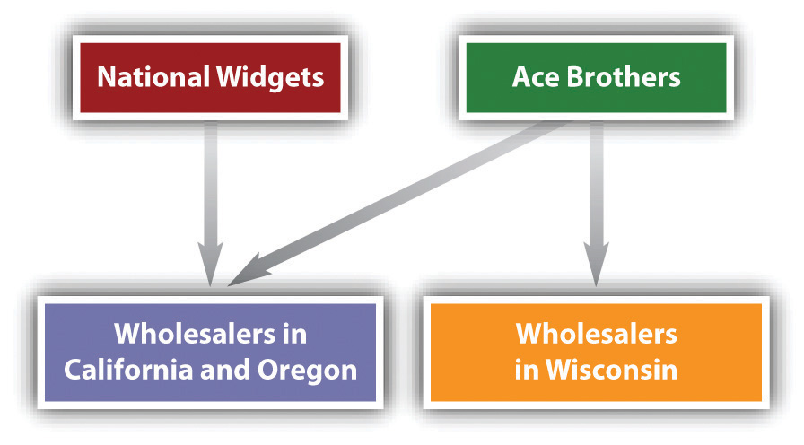
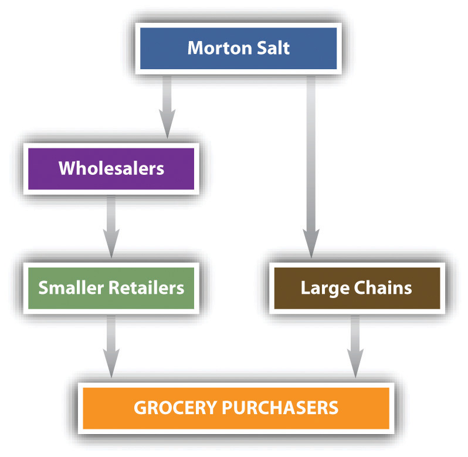

If the relatively simple and straightforward language of the Sherman Act can provide litigants and courts with interpretive headaches, the law against price discrimination—the Robinson-Patman Act—can strike the student with a crippling migraine. Technically, Section 2 of the Clayton Act, the Robinson-Patman Act, has been verbally abused almost since its enactment in 1936. It has been called the “Typhoid Mary of Antitrust,” a “grotesque manifestation of the scissors and paste-pot method” of draftsmanship. Critics carp at more than its language; many have asserted over the years that the act is anticompetitive because it prevents many firms from lowering their prices to attract more customers.
Despite this rhetoric, the Robinson-Patman Act has withstood numerous attempts to modify or repeal it, and it can come into play in many everyday situations. Although in recent years the Justice Department has declined to enforce it, leaving government enforcement efforts to the Federal Trade Commission (FTC), private plaintiffs are actively seeking treble damages in numerous cases. So whether it makes economic sense or not, the act is a living reality for marketers. This section introduces certain problems that lurk in deciding how to price goods and how to respond to competitors’ prices.
The Clayton Act’s original Section 2, enacted in 1914, was aimed at the price-cutting practice of the large trusts, which would reduce the price of products below cost where necessary in a particular location to wipe out smaller competitors who could not long sustain such losses. But the original Clayton Act exempted from its terms any “discrimination in price…on account of differences in the quantity of the commodity sold.” This was a gaping loophole that made it exceedingly difficult to prove a case of price discrimination.
Not until the Depression in the 1930s did sufficient cries of alarm over price discrimination force Congress to act. The alarm was centered on the practices of large grocery chains. Their immense buying power was used as a lever to pry out price discounts from food processors and wholesalers. Unable to extract similar price concessions, the small mom-and-pop grocery stores found that they could not offer the retail customer the lower food prices set by the chains. The small shops began to fail. In 1936, Congress strengthened Section 2 by enacting the Robinson-Patman Act. Although prompted by concern about how large buyers could use their purchasing power, the act in fact places most of its restrictions on the pricing decisions of sellers.
The heart of the act is Section 2(a), which reads in pertinent part as follows: “[I]t shall be unlawful for any person engaged in commerce…to discriminate in price between different purchasers of commodities of like grade and quality…where the effect of such discrimination may be substantially to lessen competition or tend to create a monopoly in any line of commerce, or to injure, destroy or prevent competition with any person who either grants or knowingly receives the benefit of such discrimination, or with customers of either of them.”
This section provides certain defenses to a charge of price discrimination. For example, differentials in price are permissible whenever they “make only due allowances for differences in the cost of manufacture, sale, or delivery resulting from the differing methods or quantities in which such commodities are to such purchasers sold or delivered.” This section also permits sellers to change prices in response to changing marketing conditions or the marketability of the goods—for example, if perishable goods begin to deteriorate, the seller may drop the price in order to move the goods quickly.
Section 2(b) provides the major defense to price discrimination: any price is lawful if made in good faith to meet competition.
To be discriminatory, the different prices must have been charged in sales made at the same time or reasonably close in time. What constitutes a reasonably close time depends on the industry and the circumstances of the marketplace. The time span for dairy sales would be considerably shorter than that for sales of mainframe computers, given the nature of the product, the frequency of sales, the unit cost, and the volatility of the markets.
Another preliminary issue is the identity of the actual purchaser. A supplier who deals through a dummy wholesaler might be charged with price discrimination even though on paper only one sale appears to have been made. Under the “indirect purchaser” doctrine, a seller who deals with two or more retail customers but passes their orders on to a single wholesaler and sells the total quantity to the wholesaler in one transaction, can be held to have violated the act. The retailers are treated as indirect purchasers of the supplier.
The act applies only to sales of commodities. A lease, a rental, or a license to use a product does not constitute a sale; hence price differentials under one of those arrangements cannot be unlawful under Robinson-Patman. Likewise, since the act applies only to commodities—tangible things—the courts have held that it does not apply to the sale of intangibles, such as rights to license or use patents, shares in a mutual fund, newspaper or television advertising, or title insurance.
Only those sales involving goods of “like grade and quality” can be tested under the act for discriminatory pricing. What do these terms mean? The leading case is FTC v. Borden Co., in which the Supreme Court ruled that trademarks and labels do not, for Robinson-Patman purposes, distinguish products that are otherwise the same.FTC v. Borden Co., 383 U.S. 637 (1966). Grade and quality must be determined “by the characteristics of the product itself.” When the products are physically or chemically identical, they are of like grade and quality, regardless of how imaginative marketing executives attempt to distinguish them. But physical differences that affect marketability can serve to denote products as being of different grade and quality, even if the differences are slight and do not affect the seller’s cost in manufacturing or marketing.
To violate the Robinson-Patman Act, the seller’s price discrimination must have an anticompetitive effect. The usual Clayton Act standard for measuring injury applies to Robinson-Patman violations—that is, a violation occurs when the effect may be substantially to lessen competition or tend to create a monopoly in any line of commerce. But because the Robinson-Patman Act has a more specific test of competitive injury, the general standard is rarely cited.
The more specific test measures the impact on particular persons affected. Section 2(a) says that it is unlawful to discriminate in price where the effect is “to injure, destroy, or prevent competition with any person who grants or knowingly receives the benefit of such discrimination or to customers of either of them.” The effect—injury, destruction, or prevention of competition—is measured against three types of those suffering it: (1) competitors of the seller or supplier (i.e., competitors of the person who “grants” the price discrimination), (2) competitors of the buyer (i.e., competitors of the buyer who “knowingly receives the benefit” of the price differential), and (3) customers of either of the two types of competitors. As we will see, the third category presents many difficulties.
For purposes of our discussion, assume the following scenario: Ace Brothers Widget Company manufactures the usual sizes and styles of American domestic widgets. It competes primarily with National Widget Corporation, although several smaller companies make widgets in various parts of the country. Ace Brothers is the largest manufacturer and sells throughout the United States. National sells primarily in the western states. The industry has several forms of distribution. Many retailers buy directly from Ace and National, but several regional and national wholesalers also operate, including Widget Jobbers, Ltd. and Widget Pushers, LLC. The retailers in any particular city compete directly against each other to sell to the general public. Jobbers and Pushers are in direct competition. Jobbers also sells directly to the public, so that it is in direct competition with retailers as well as Widget Pushers. As everyone knows, widgets are extremely price sensitive, being virtually identical in physical appearance and form.
Now consider the situation in California, Oregon, and Wisconsin. The competing manufacturers, Ace Brothers and National Widgets, both sell to wholesalers in California and Oregon, but only Ace has a sales arm in Wisconsin. Seeing an opportunity, Ace drops its prices to wholesalers in California and Oregon and raises them in Wisconsin, putting National at a competitive disadvantage. This situation, illustrated in Figure 26.2 "Primary-Line Injury", is an example of primary-line injuryPrice discrimination under the Robinson-Patman Act that directly injures a competitor, in violation of Section 2(a).—the injury is done directly to a competitor of the company that differentiates its prices. This is price discrimination, and it is prohibited under Section 2(a).
Figure 26.2 Primary-Line Injury
Most forms of primary-line injury have a geographical basis, but they need not. Suppose National sells exclusively to Jobbers in northern California, and Ace Brothers sells both to Jobbers and several other wholesalers. If Ace cuts its prices to Jobbers while charging higher prices to the other wholesalers, the effect is also primary-line injury to National. Jobbers will obviously want to buy more from Ace at lower prices, and National’s reduced business is therefore a direct injury. If Ace intends to drive National out of business, this violation of Section 2(a) could also be an attempt to monopolize in violation of Section 2 of the Sherman Act.
Next, we consider injury done to competing buyers. Suppose that Ace Brothers favors Jobbers—or that Jobbers, a powerful and giant wholesaler, induces Ace to act favorably by threatening not to carry Ace’s line of widgets otherwise. Although Ace continues to supply both Jobbers and Widget Pushers, it cuts its prices to Jobbers. As a result, Jobbers can charge its retail customers lower prices than can Pushers, so that Pushers’s business begins to slack off. This is secondary-line injuryPrice discrimination under the Robinson-Patman act that injures a competitor of a buyer, in violation of Section 2(a). at the buyer’s level. Jobbers and Pushers are in direct competition, and by impairing Pushers’s ability to compete, the requisite injury has been committed. This situation is illustrated in Figure 26.3 "Secondary-Line Injury".
Figure 26.3 Secondary-Line Injury

Variations on this secondary-line injury are possible. Assume Ace Brothers sells directly to Fast Widgets, a retail shop, and also to Jobbers. Jobbers sells to retail shops that compete with Fast Widgets and also directly to consumers. The situation is illustrated in Figure 26.4 "Variation on Secondary-Line Injury").
Figure 26.4 Variation on Secondary-Line Injury

If Ace favors Jobbers by cutting its prices, discriminating against Fast Widgets, the transaction is unlawful, even though Jobbers and Fast Widgets do not compete for sales to other retailers. Their competition for the business of ultimate consumers is sufficient to establish the illegality of the discrimination. A variation on this situation was at issue in the first important case to test Section 2(a) as it affects buyers. Morton Salt sold to both wholesalers and retailers, offering quantity discounts. Its pricing policy was structured to give large buyers great savings, computed on a yearly total, not on shipments made at any one time. Only five retail chains could take advantage of the higher discounts, and as a result, these chains could sell salt to grocery shoppers at a price below that at which the chains’ retail competitors could buy it from their wholesalers. See Figure 26.5 "Variation: Morton Salt Co." for a schematic illustration. In this case, FTC v. Morton Salt Co., the Supreme Court for the first time declared that the impact of the discrimination does not have to be actual; it is enough if there is a “reasonable possibility” of competitive injury.FTC v. Morton Salt Co., 334 U.S. 37 (1948).
Figure 26.5 Variation: Morton Salt Co.
In order to make out a case of secondary-line injury, it is necessary to show that the buyers purchasing at different prices are in fact competitors. Suppose that Ace Brothers sells to Fast Widgets, the retailer, and also to Boron Enterprises, a manufacturer that incorporates widgets in most of its products. Boron does not compete against Fast Widgets, and therefore Ace Brothers may charge different prices to Boron and Fast without fearing Robinson-Patman repercussions. Figure 26.6 "Variation: Boron-Fast Schematic" shows the Boron-Fast schematic.
Figure 26.6 Variation: Boron-Fast Schematic
Second-line injury to buyers does not exhaust the possibilities. Robinson-Patman also works against so-called third-line or tertiary-line injury. At stake here is injury another rung down the chain of distribution. Ace Brothers sells to Pushers, which processes unfinished widgets in its own factory and sells them in turn directly to retail customers. Ace also sells to Jobbers, a wholesaler without processing facilities. Jobbers sells to retail shops that can process the goods and sell directly to consumers, thus competing with Pushers for the retail business. This distribution chain is shown schematically in Figure 26.7 "Third-Line Injury".
Figure 26.7 Third-Line Injury
If Ace’s price differs between Pushers and Jobbers so that Jobbers is able to sell at a lower price to the ultimate consumers than Pushers, a Robinson-Patman violation has occurred.
In a complex economy, the distribution chain can go on and on. So far, we have examined discrimination on the level of competing supplier-sellers, on the level of competing customers of the supplier-seller, and on the level of competing customers of customers of the supplier-seller. Does the vigilant spotlight of Robinson-Patman penetrate below this level? The Supreme Court has said yes. In Perkins v. Standard Oil Co., the Court said that “customer” in Section 2(a) means any person who distributes the supplier-seller’s product, regardless of how many intermediaries are involved in getting the product to him.Perkins v. Standard Oil Co., 395 U.S. 642 (1969).
Price discrimination is not per se unlawful. The Robinson-Patman Act allows the seller two general defenses: (1) cost justification and (2) meeting competition. If the seller can demonstrate that sales to one particular buyer are cheaper than sales to others, a price differential is permitted if it is based entirely on the cost differences. For example, if one buyer is willing to have the goods packed in cheaper containers or larger crates that save money, that savings can be passed along to the buyer. Similarly, a buyer who takes over a warehousing function formerly undertaken by the seller is entitled to have the cost saving reflected in the selling price. Suppose the buyer orders its entire requirements for the year from the manufacturer, a quantity many times greater than that taken by any other customer. This large order permits the manufacturer to make the goods at a considerably reduced unit cost. May the manufacturer pass those savings along to the quantity buyer? It may, as long as it does not pass along the entire savings but only that attributable to the particular buyer, for other buyers add to its total production run and thus contribute to the final unit production cost. The marketing manager should be aware that the courts strictly construe cost-justification claims, and few companies have succeeded with this defense.
Lowering a price to meet competition is a complete defense to a charge of price discrimination. Assume Ace Brothers is selling widgets to retailers in Indiana and Kentucky at $100 per dozen. National Widgets suddenly enters the Kentucky market and, because it has lower manufacturing costs than Ace, sells widgets to the four Kentucky widget retailers at $85 per dozen. Ace may lower its price to that amount in Kentucky without lowering its Indiana price. However, if National’s price violated the Robinson-Patman Act and Ace knew or should have known that it did, Ace may not reduce its price.
The defense of meeting competition has certain limitations. For example, the seller may not use this defense as an excuse to charge different customers a price differential over the long run. Moreover, if National’s lower prices result from quantity orders, Ace may reduce its prices only for like quantities. Ace may not reduce its price for lesser quantities if National charges more for smaller orders. And although Ace may meet National’s price to a given customer, Ace may not legally charge less.
Section 2(c) prohibits payment of commissions by one party in a transaction to the opposite party (or to the opposite party’s agent) in a sale of goods unless services are actually rendered for them. Suppose the buyer’s broker warehouses the goods. May the seller pass along this cost to the broker in the form of a rebate? Isn’t that “services rendered”? Although it might seem so, the courts have said no, because they refuse to concede that a buyer’s broker or agent can perform services for the seller. Because Section 2(c) of the Robinson-Patman Act stands on its own, the plaintiff need prove only that a single payment was made. Further proof of competitive impact is unnecessary. Hence Section 2(c) cases are relatively easy to win once the fact of a brokerage commission is uncovered.
Sections 2(d) and 2(e) of the Robinson-Patman Act prohibit sellers from granting discriminatory allowances for merchandising and from performing other services for buyers on a discriminatory basis. These sections are necessary because price alone is far from the only way to offer discounts to favored buyers. Allowances and services covered by these sections include advertising allowances, floor and window displays, warehousing, return privileges, and special packaging.
Under the Robinson-Patman Act, it is illegal to charge different prices to different purchasers if the items are the same and the price discrimination lessens competition. It is legal, however, to charge a lower price to a specific buyer if the cost of serving that buyer is lower or if the seller is simply “meeting competition.”